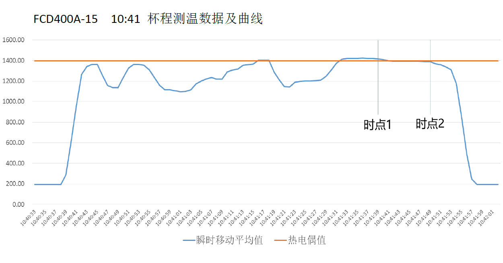
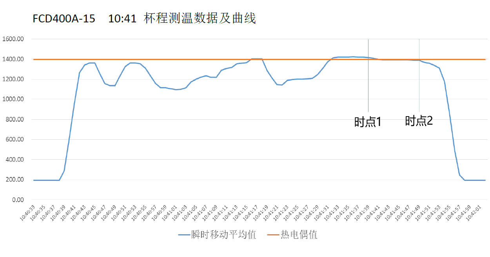
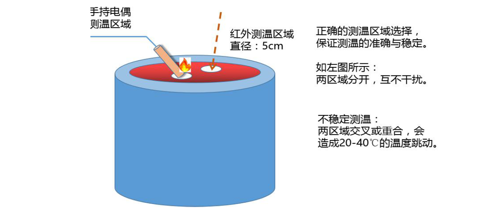
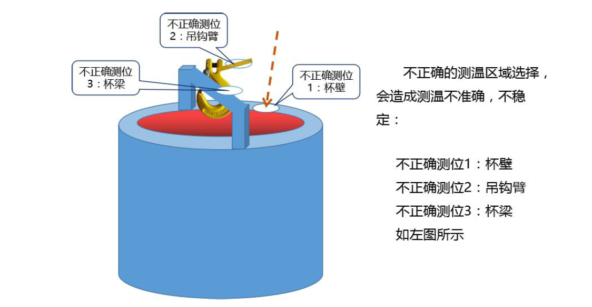
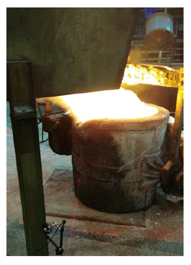

附件1: A 企业浇注三线
2016 年3 月23 日红外测温数据分析报告
-
一、本次测温装置安装方式：（如下图）

-
二、手持热电偶测温值是点温度：
1. 点温度有两层含义：
1测温位置是汤杯中的一个局部区域点；
2测温值对应的时点是5-7 秒测温时段中最高温度只对应的时点。2. 3 月23 日测温数据分析：
1红外测温样本抽取分布如下表：
如上图，以下红外测温数据杯样本选取生产最集中的3 种材质品种（FCD400A-15、FCD400A-10、 FC230-15），3 种材质杯样本选取量均为100%，样本总量占生产总量的49%。
2红外测温仪温度数据采集及计算说明
a) 本次测量按FCD 及FC 两大类材质分别设定发射率，没有细化到单个品种材质分 别设定发射率。FCD 类材质品种间发射率差别不大，FC 类材质品种间发射率差 别较大。
b) 采集数据操作步骤说明
第一步：根据汤杯材质设定发射率，由于每炉生产5 汤杯，因此仅在换材质后第 一汤杯前进行设定材质发射率；
第二步：二次扒渣结束，操作人员拿热电偶前红外测温仪启动测温（此时点为时点 1，参见下图）；第三步：热电偶测试结束后，红外测温仪停止测温（此时点为时点2，参见上图）；
c) 温度计算说明
红外测温仪每秒记录一个前向1500ms 的温度移动平均值；
计算每杯程时点1 至时点2 之间所有红外测温仪温度值的平均值，此平均值就是汤杯内铁液的温度。 3红外测温样本分析材质品种1：FCD400A-15 

4红外测温样本分析材质品种2：FCD400A-10
5红外测温样本分析材质品种3：FC230-15
6红外测温值相比手持热电偶侧温值偏差汇总分析
3. 红外测温准确性及稳定性的主要影响因素：
1测温区域的选测
 当测温装置固定安装后，汤杯的落置位直接决定测温区域， 汤杯落置位准确，测温值就相对准确稳定。（右图是现场不正确 的汤杯落置位）
2对于不同材质汤料正确选择发射率及修正值
每种材质至少需要20 杯程测温数据，可确定比较准确的发射率及修正值。 本次测温时段内82 杯程，转换了11 种材质。 实际应用红外测温装置必须具备对齐汤杯材质的功能，否则无法实现发射率及修正值的 实时转换，也就不能输出正确的测温值。